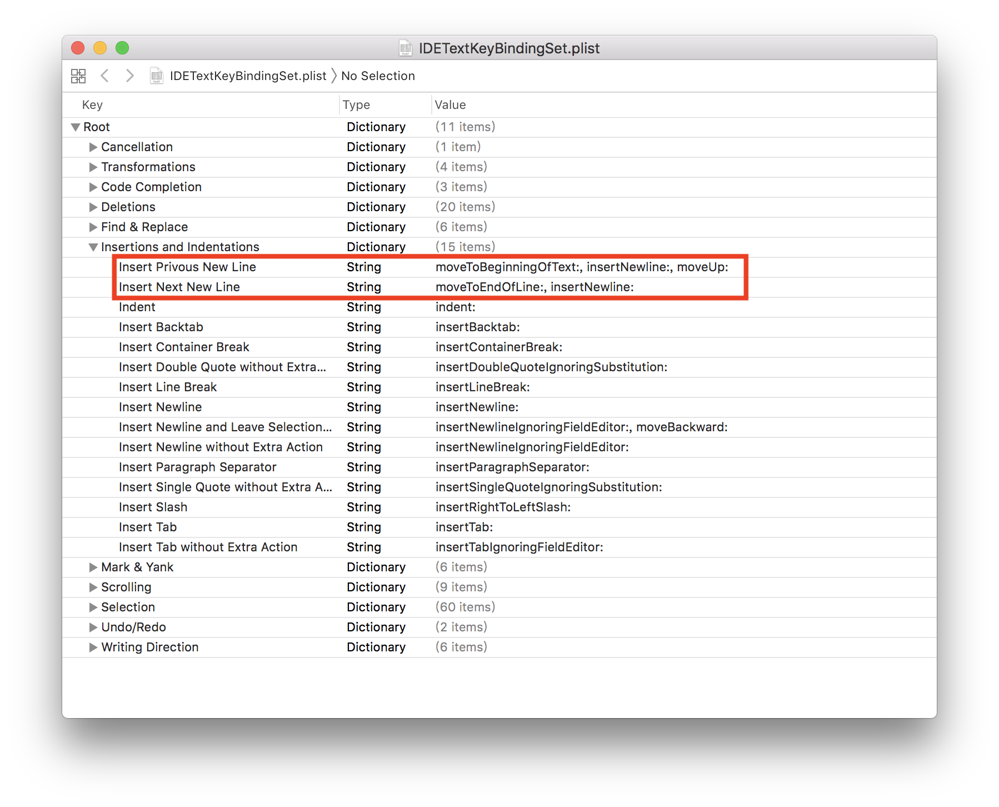
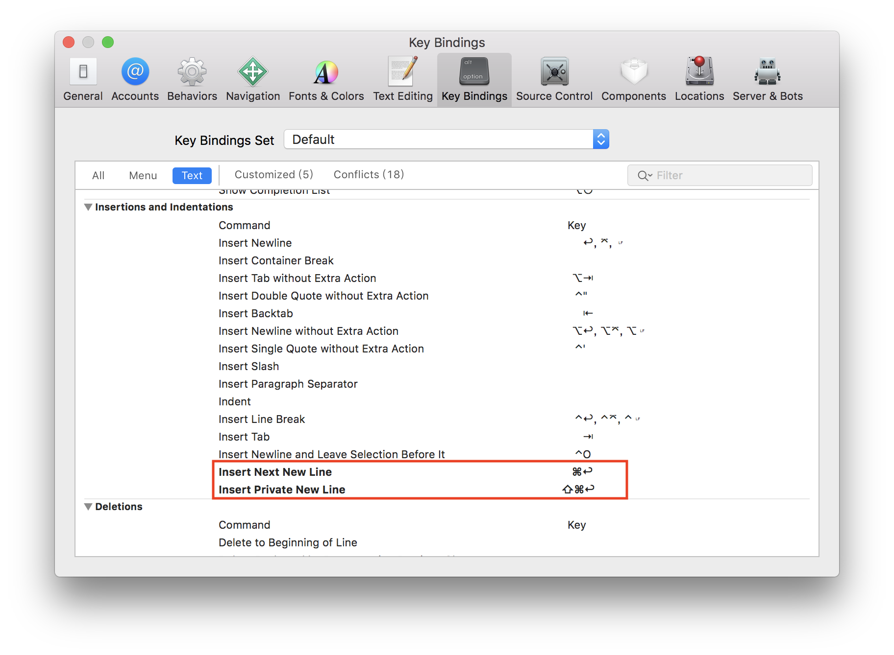

用過難用的 Xcode 後，有些在別的 IDE 好用的快速鍵，大部分 Xcode 都沒有，
像是刪除一行、複製一行、往下新增一行等，
不過好在還是有方法可以自訂快速鍵。
Xcode 的快速鍵定義在
/Applications/Xcode.app/Contents/Frameworks/IDEKit.framework/Resources/IDETextKeyBindingSet.plist
這個檔案裡，
這檔案的寫入權限預設是關閉的，所以我們先將權限打開。
開啟終端機，輸入以下指令，將檔案和目錄的權限打開
1 | sudo chmod 666 /Applications/Xcode.app/Contents/Frameworks/IDEKit.framework/Resources/IDETextKeyBindingSet.plist |
接著再輸入
1 | open /Applications/Xcode.app/Contents/Frameworks/IDEKit.framework/Resources/IDETextKeyBindingSet.plist |
打開plist檔案，預設應該會開啟 xcode。
然後我們就直接編輯，新增我們想要的快速鍵指令

這邊新增兩個，一個是再游標的下面新增一行(Insert Next New Line)，另一個是在游標的上面新增一行(Insert Privous New Line)。
後面接著這個指令的動作，
Insert Next New Line 的動作是 moveToEndOfLine;, insertNewLine:
其動作為移動到這一行的最後，然後新增一行。
Insert Privous New Line 的動作是 moveToBeginningOfText:, insertNewLine:, moveUp:
其動作為移動到此行文字的開頭，新增一行，游標上移。
這邊的動作需要以冒號結尾，若是多個動作要用逗號組合，
更多指令可以參考其他的快速鍵的動作。
儲存檔案後重新開啟 Xcode，然後打開快速鍵設定，如下圖

就可以看到新增加的兩個快速鍵設定，
這時再設定你喜歡的按法就可以囉。
雖然 Xcode 很難用，但在快速鍵方面還是可以自己稍微設定的。